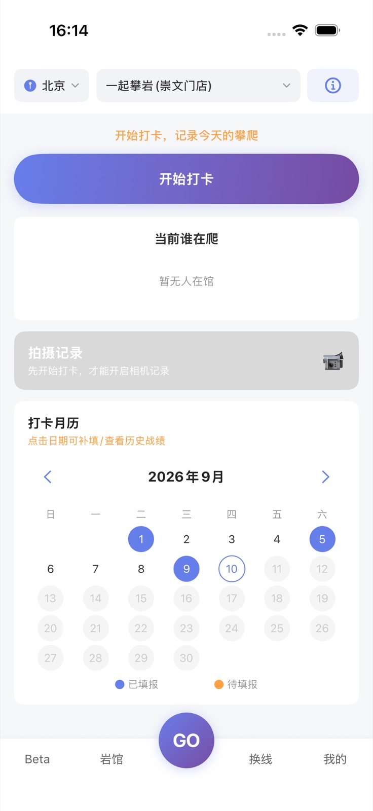
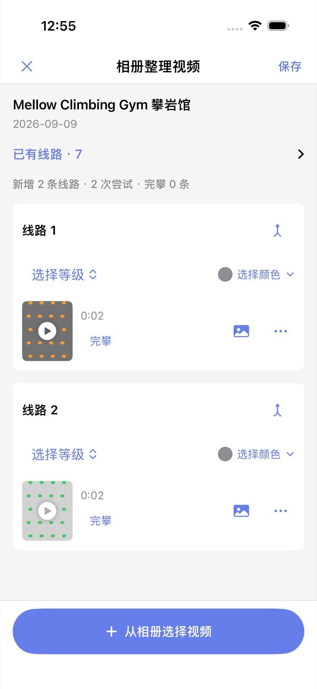

01
打卡与战绩
选择岩馆开始打卡，记录训练时长、尝试次数和完攀等级，形成自己的攀爬日历。
清晰训练轨迹
连续个人记录
为爬友而做的 iPhone App
从到馆打卡、线路尝试到完攀视频，把散落的攀爬片段整理成清晰的训练轨迹。
适用于 iPhone · 需要 iOS 16 或更高版本

01 到馆打卡
02 线路记录
03 Beta 整理
04 换线日历
核心功能
选择岩馆开始打卡，记录训练时长、尝试次数和完攀等级，形成自己的攀爬日历。
从相册选择训练视频，按线路整理颜色、难度与结果。每条 Beta 都能回到对应的一爬。
查找岩馆、了解近期换线，提前安排训练计划，也能看到其他爬友分享的真实体验。
真实 App 界面
不是只记一个数字。时间、线路、视频、感受和进步，都能在之后被重新看见。

即将开放公开测试
TestFlight 公开测试准备中。开放后可从本页直接安装。